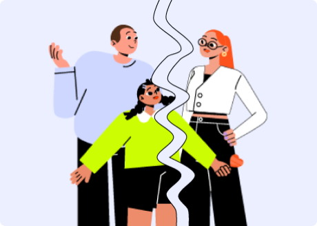

Стосунки на відстані під час війни
Війна створює штучну кризу для стосунків
Через війну багато сімей вимушені роз'їхатися на невизначений час, перебувати далеко від своєї домівки та рідних. Це впливає як на подружні взаємини, так і на родинні стосунки загалом. Важливо бути готовим до прийняття змін, спричинених розставанням.

Що ускладнює взаємини між партнерами, які змушені жити на відстані?
Зміни середовища
- ситуація невизначеності
- особливості впливу війни на кожного із партнерів(-ок)
- зміна ролей, а відтак — обов’язків і навантажень
Віддалення
- відсутність тілесного контакту
- неможливість проводити час спільно
Складнощі адаптації до нових умов
- переміщення в інші, часто незвичні й незручні умови, та вимушена адаптація до них
- брак особистого вільного часу та простору для короткочасного усамітнення через надмірні навантаження та незвичні умови перебування
Рекомендації як вберегти стосунки на відстані
Визнайте зміни, які відбулись
Говоріть та слухайте
Фокусуйтесь на "тут і тепер"
Прийміть зміни
Тримайтеся одне за одного
Підтримуйте одне одного
Підтримка — важлива частина стосунків у парі та важливий ресурс, необхідний для подолання моральних і фізичних навантажень. Турбота необхідна як в побутових питаннях, так і в різноманітних життєвих ситуаціях. Думайте, радьтеся і визначайте, як ви будете підтримувати одне одного.
Обговорюйте переживання
- запитуйте одне в одного, як хто почувається
- обговорюйте, що вас тривожить, засмучує
- говоріть, що сумуєте, скучили, мрієте про зустріч
Викликайте позитивні емоції
- говоріть компліменти, хваліть за вчинки, висловлюйте щирі побажання
- діліться тим, що вас зацікавило чи вразило, що відбулося приємного впродовж дня
- частіше говоріть, що любите одне одного
Зміцнюйте зв'язки
- підтримуйте сімейні традиції та ритуали
- визначайте разом, як їх змінювати за потреби
- вигадуйте нові приємні сімейні ритуали
Спілкуйтеся та зберігайте емоційний контакт
Збереженню емоційного контакту в парі допомагають різні канали комунікації — спілкуйтеся по відеозв’язку, надсилайте текстові та голосові повідомлення.
Створіть чат і діліться почуттями, надсилаючи фотографії, відео, улюблені пісні. Діліться власними успіхами та враженнями.
Домовтеся про спільний перегляд фільмів або читання книг із подальшим обговоренням. Намагайтеся шукати можливостей для зустрічі, принаймні уявної.
Фіксуйте й проговорюйте все, що хочете реалізувати разом. Долайте уявні і реальні перешкоди разом. Придумуйте спільні челенджі. Наприклад, тренуйтеся разом у будь-який спосіб, разом вивчайте мови, готуйте їжу тощо, діліться досягненнями. Час від часу переглядайте плани — життя мінливе.
Згадуйте разом найкращі хвилини. Говоріть одне одному про почуття, обійми й дотики. Якщо відстань не дає змоги фізично відчути близькість дорогої людини — допоможуть слова.